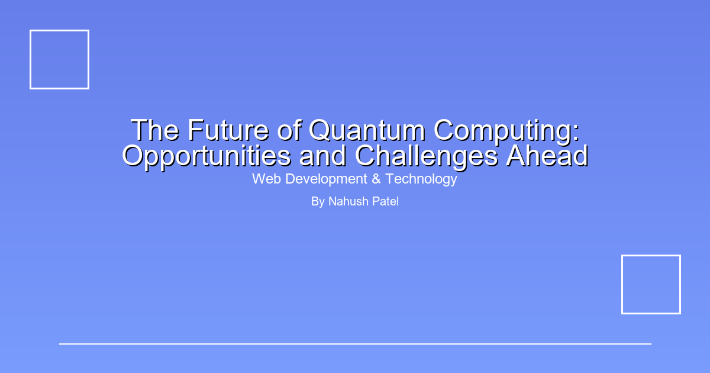

The Future of Quantum Computing: Opportunities and Challenges Ahead
Quantum computing is poised to revolutionize the world of technology, offering computational power far beyond the capabilities of classical computers. In this article, we explore what quantum computing is, the opportunities it presents, the challenges it faces, and what the future may hold.
What is Quantum Computing?
Quantum computing leverages the principles of quantum mechanics to process information in fundamentally new ways. Unlike classical bits, which are either 0 or 1, quantum bits (qubits) can exist in multiple states simultaneously, enabling massive parallelism and new algorithms.
Opportunities in Quantum Tech
Quantum computers have the potential to solve problems that are currently intractable for classical computers. This includes breakthroughs in cryptography, drug discovery, materials science, optimization, and artificial intelligence. Industries from finance to healthcare are investing in quantum research to gain a competitive edge.
Challenges and Limitations
Despite its promise, quantum computing faces significant hurdles. Qubits are extremely sensitive to their environment, leading to errors and instability. Building scalable, error-corrected quantum computers remains a major engineering challenge. Additionally, developing quantum algorithms and software requires new ways of thinking and specialized expertise.
Real-World Applications
While large-scale, fault-tolerant quantum computers are still in development, early quantum devices are already being used for research and experimentation. Companies like IBM, Google, and startups are offering cloud-based quantum computing platforms, allowing scientists and developers to explore quantum algorithms and applications.
The Road Ahead
The future of quantum computing is both exciting and uncertain. As research progresses, we can expect new breakthroughs, increased investment, and a growing ecosystem of quantum technologies. Staying informed and adaptable will be key for organizations and individuals looking to leverage the power of quantum computing in the years to come.
Conclusion
Quantum computing represents a paradigm shift in technology. While challenges remain, the opportunities are immense. By understanding the fundamentals and keeping pace with advancements, we can prepare for a future where quantum computers transform industries and solve problems once thought impossible.